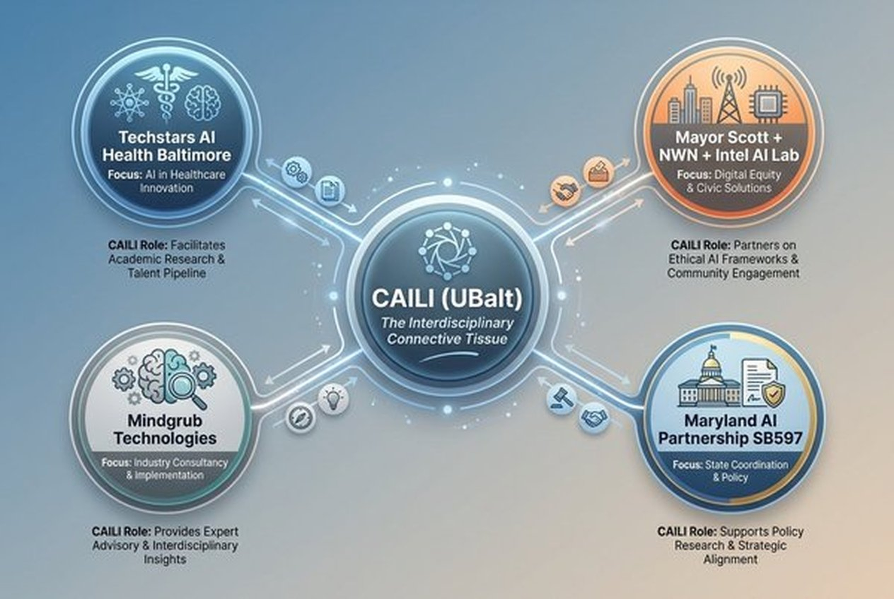
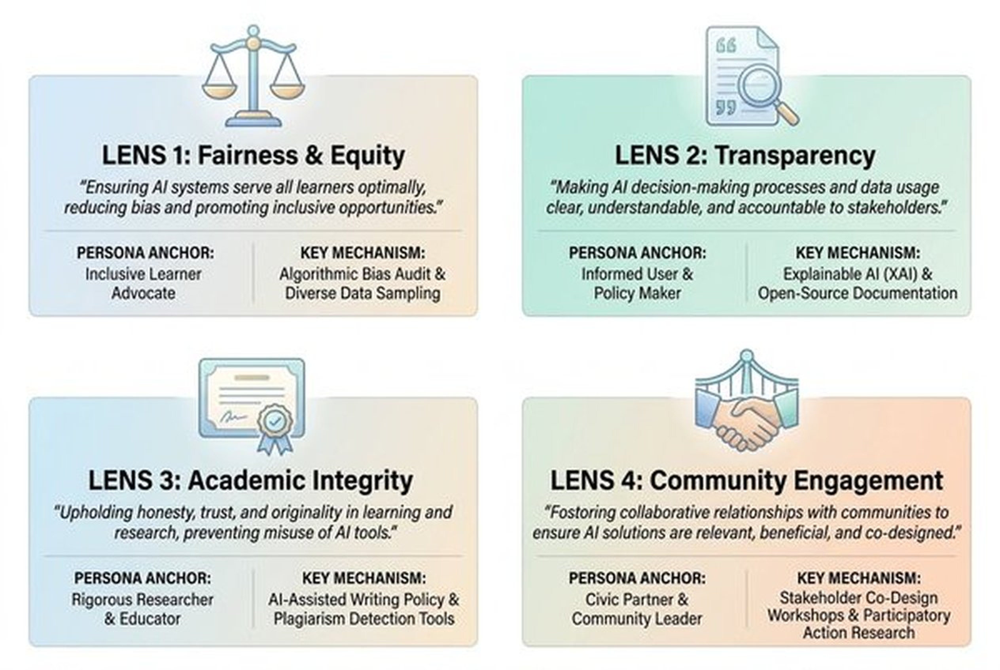

Center for AI Learning & Community-Engaged Innovation
CAILI AI Studio
A Community-Grounded Compass for responsible AI adoption at the University of Baltimore
Helping the University of Baltimore turn institutional AI access into a working ecosystem of course-specific tools, faculty enablement workflows, and builder agents. Guided by our Community-Grounded Compass, CAILI makes responsible teaching and learning easier for classroom work, study support, and community innovation.
Mission focus
Community Compass
Six Baltimore personas ground every CAILI tool in real stakeholder needs, ensuring access and measured adoption.
Built for adoption
Tool Ecosystem
Live prototypes, prompt libraries, and builder agents make AI feel usable now, not hypothetical later.
Ready to launch
Course Launchpads
Pathways connecting tools to course goals, simulations, study support, and applied classroom work.
Shared learning
Community Focus
BoodleBox workspaces and collective prompting patterns make it easier to learn together.
2026 National Context
Why CAILI, Why Now
92%
of students engaging with AI in 2026
up from 86% in 2024
80%
of universities lack formal AI policies
critical governance gap
73%
of faculty handling AI integrity issues
AAC&U, January 2026
1/5
students use AI in coursework daily
Lumina-Gallup 2026
The CAILI Differentiator: While most institutions race to write policy after adoption, CAILI was architected from inception around a Community-Grounded Compass — making it Maryland's only interdisciplinary AI center bridging Law, Public Affairs, Business, and Arts & Sciences.
CAILI AI Studio Tool Ecosystem
Course-specific AI tools, faculty workflows, and builder agents
Bringing together working prototypes that make responsible AI adoption practical across UBalt classrooms.
Course-specific tools for simulation, study support, and quantitative practice across all disciplines.
ECON Simulator
Interactive economics simulation featuring 78 interactive modules with live data from the Federal Reserve Economic Database (FRED). Students manipulate variables and observe market equilibria shift in real-time.
ECON 606 Study Bot
A multi-agent AI system on BoodleBox coordinating Claude 4.6 Opus (Master Orchestrator), Gemini 3.1 Pro (financial math), ChatGPT 5.4 (study materials), and Perplexity Pro (fact-checking). Strictly course-grounded - references only provided teaching materials.
OPM Simulator
Operations and supply chain simulation for forecasting, capacity, and decision-making practice.
QuantLab
A practice space for formulas, data interpretation, applied modeling, and MBA analytics support.
Tools that help convert course materials into usable workflows.
Instructions Generator
Turn course materials, assignments, and learning goals into structured AI instructions and multi-agent architectures.
Generate InstructionsOutcomes
- Assignment-ready
- Shared agent roles
- Reusable patterns
AI Syllabi Policy Generator
Create AI syllabus statements using a tiered framework or a custom set of classroom rules and disclosure expectations.
Implements the three-tier framework adopted by 83.3% of institutions (ASPPH 2026), uniquely integrating Baltimore's Community Engagement lens.
Outcomes
- Course-specific text
- Clear expectations
- Printable output
A Community-Grounded Compass for AI
Meet Baltimore's AI Ecosystem
According to the "Understanding Baltimore's AI Ecosystem" Report, successful AI adoption requires understanding stakeholders' lived experiences. We identified six distinct user personas across Baltimore.
The Civic Champion
City Data Analyst • Age 38
"We don't need more data—we need better decisions. AI helps us get there faster, but only if we stay accountable."
A city official leveraging AI to make Baltimore more responsive and equitable. They aggregate data to surface service gaps.
Needs actionable data. Fears AI replacing human accountability in public policy.
CAILI Solution
The Community-Grounded Compass—developed with Mindgrub from interviews with Baltimore city officials, community leaders, and data analysts—ensures every CAILI tool passes through the Fairness and Transparency lenses. AI is positioned as an "over-eager assistant" that surfaces insights while keeping human accountability at the center. The 4-lens ethical framework (Fairness, Transparency, Integrity, Community) was directly informed by this persona's insistence that data must serve people, not replace judgment.
The Student Superuser
Finance Major • Age 22
"I'm getting assignments done in half the time—why wouldn't I use it?"
An early adopter treating AI as a career accelerator. Uses AI for outlines, market trends, and job searching.
Needs maximum efficiency. Fears being left behind professionally.
CAILI Solution
Channels raw ambition into structured, course-grounded tools: the ECON 606 Study Bot (a multi-agent AI system on BoodleBox), EconSim (78 interactive modules with live FRED economic data), QuantLab, and the OPM Simulator. BoodleBox's Enhanced AI Coach Mode transforms students from passive consumers of AI outputs into skilled practitioners who question outputs, interrogate assumptions, and distinguish well-written responses from well-reasoned ones. Students submit working process files with every assignment—conversation transcripts are examined, building the metacognitive skills employers demand.
The Adaptive Achiever
Non-Traditional Learner • Age 42
"Opting out feels like a privilege. With everything going on, I can't afford not to use it."
Uses AI as a cognitive support system to process dense info and juggle work/study without losing independence.
Needs cognitive support. Fears eroding critical thinking skills.
CAILI Solution
Every CAILI tool is designed around the Integrity lens: course-grounded Study Bots limit responses to provided teaching materials with explicit references, preventing hallucination and keeping the student's reasoning at the center. BoodleBox Coach Mode develops metacognitive skills—students learn to question AI outputs, interrogate assumptions, and distinguish well-written from well-reasoned responses. Process files and conversation transcripts are submitted with assignments, ensuring the Adaptive Achiever's unique voice and critical thinking remain visible, not replaced.
The Prudent Professor
University Professor • Age 52
"The upsides are clear, but long-term impact is murky. We need more time to study."
Highly concerned about cognitive decline, hallucination-riddled outputs, and a lack of clear institutional guidelines.
Needs to parse datasets efficiently. Fears student reliance and lack of policy.
CAILI Solution
The AI Syllabi Policy Generator, built on the AI Assessment Scale (AIAS), lets faculty create tiered, course-specific policies in minutes rather than hours. The Instructions Generator converts existing course materials into AI-ready classroom workflows. Through the AI Navigator Fellows program, cross-disciplinary faculty test AI tools in their own courses and share findings with colleagues—building institutional knowledge collectively. All CAILI tools are course-grounded: Study Bots reference only provided teaching materials with explicit citations, addressing the hallucination concerns that keep the Prudent Professor up at night.
The Hometown Hero
Skilled Trades / Lineman • Age 49
"AI feels less like some tool, and more like something that's happening to me."
A Baltimore native whose world is physical. AI feels foreign, impractical, and vaguely threatening.
Needs tangible value. Fears surveillance, job instability, and moving too fast.
CAILI Solution
CAILI's Live Prototypes—from the ECON Simulator to the AI-Enabled Business Accelerator—demonstrate concrete, everyday value rather than abstract AI promises. The Community Lens, central to CAILI's 4-lens ethical framework, ensures every tool is designed with Baltimore communities, not for them. Free, unlimited BoodleBox access puts enterprise AI tools in the hands of every UBalt community member. The AI-Enabled Business Accelerator directly supports Baltimore entrepreneurs building ventures in healthcare, energy, housing, and education—proving AI can create opportunity, not just disruption.
The Labor Guardian
Union Rep / Educator • Age 39
"Somehow, new technology always ends up exploiting the working class."
Sees AI as a growing threat to job security and human-centered work. Rigorously tests for hallucinations.
Needs to protect workers. Fears AI pushing out human judgment and core skills.
CAILI Solution
CAILI's core philosophy is that AI should enhance—rather than replace—the educational experience. BoodleBox's transparency architecture (conversation transcripts, process files, faculty visibility) ensures every AI interaction is auditable. The 4-lens ethical framework was designed with the Labor Guardian's concerns at the center: Integrity keeps human reasoning primary, Community puts Baltimore's workers in the problem, not outside it. The AI-Enabled Business Accelerator proves the model—supporting Baltimore founders who create jobs. CAILI treats AI as a collaborator, not a shortcut machine.
Common Themes
What Now? The Path Forward
- Test these personas with the community.
- Use them to guide outreach and workforce planning.
- Treat personas as a living framework.
Contact Dr. Jessica A Stansbury (caili@ubalt.edu) for more info.
From Research to Impact
The Path Forward
CAILI's six Baltimore personas are not static research artifacts — they are a living operational framework that guides every decision. Here is how we activate them.
Phase 1
Validate
Test the personas with the community. Run iterative workshops with each persona's real-world community: city agencies, faculty senates, non-traditional learner cohorts, trade unions, and labor advocacy groups. Refine the personas based on lived feedback.
Phase 2
Navigate
Use personas to guide outreach and workforce planning. Deploy the CAILI Navigator Program — embedding AI-fluent peer experts within the communities each persona represents. Trust travels through familiar relationships.
Phase 3
Evolve
Treat personas as a living framework. Update annually with new survey data, emerging AI capabilities, and community input. The framework grows with Baltimore — it does not freeze in 2026.
Phase 4
Scale
Bridge persona insights into state-level policy. Through Maryland's SB597 AI Partnership and CAILI's proposed role as a Technology Extension Hub, scale persona-informed AI literacy beyond Baltimore to communities statewide.
Where CAILI Connects
Baltimore AI Ecosystem
CAILI doesn't compete with Baltimore's AI ecosystem — it connects it. As the only academic center bridging Law, Public Affairs, Business, and Arts & Sciences, CAILI provides the ethical scaffolding and research foundation that healthcare accelerators, city-led equity labs, and industry partners all need.

Techstars AI Health Baltimore
Healthcare AI startups anchored by Johns Hopkins. CAILI serves as academic & ethical R&D partner.
Mayor Scott + NWN + Intel AI Lab
Youth & senior digital equity programs. CAILI's persona research informs culturally responsive curricula.
Mindgrub Technologies
Inc. 5000 industry tech consultancy co-developed the Community-Grounded Compass with CAILI.
Maryland AI Partnership (SB597)
CAILI is proposed as a Technology Extension Hub providing ethical AI deployment statewide.
Institutional infrastructure, activated
BoodleBox Integration
BoodleBox provides UBalt with free, unlimited access to leading AI models—GPT-4o, Claude, Gemini, Perplexity, and more—through a single, secure, FERPA-compliant platform. As the Collaborative AI Platform for Lifelong Learning and Work, BoodleBox combines multi-model access with Coach Mode for AI literacy development, custom AI assistants, and enterprise-grade security. CAILI adds the missing layer: course-specific tools, faculty enablement workflows, and shared collaborative patterns that turn access into adoption.
"Teaching AI fluency transcends single-tool mastery. It's about understanding the ecosystem of AI engines and developing the judgment to know what, when, how, and why to deploy them—ultimately enhancing our human capacity for innovation. BoodleBox transforms this possibility into reality."
— Dr. Jessica Stansbury, Founding Director, CAILI
-
Multi-model access, one platform Reach GPT-4o, Claude, Gemini, and Perplexity from a single starting point—no switching between tools. Up to 96% token reduction keeps premium AI affordable.
-
Coach Mode & AI literacy development Students learn while doing. Coach Mode guides interactions, helping users develop AI judgment—knowing what, when, how, and why to deploy AI tools.
-
Transparent assessment & collaboration Students can cite and share AI-assisted work. Professors evaluate both process and product—from individual interactions to group projects. Your data stays yours—BoodleBox never trains models on user content.
-
Lifelong portability & enterprise security FERPA compliant and SOC 2 certified. Students keep access to their AI work after graduation. One of higher education's largest AI deployments with SSO and LMS integration support.
Why CAILI AI Studio matters
Accelerate adoption. Empower learning.
In its first year, CAILI moved quickly from vision to action—securing a campus-wide BoodleBox partnership, launching the AI Navigator Fellows program, and growing the AI Summit into one of the region's most important convenings. In partnership with Merrick's Center for Entrepreneurship and Innovation, CAILI also powers the AI-Enabled Business Accelerator, a 9-week program supporting Baltimore founders applying AI across healthcare, energy, education, housing, and workforce development. Free access alone does not create confident adoption. CAILI turns institutional access into a usable ecosystem—grounded in the Community-Grounded Compass.
Live Prototypes
Working tools make the Studio easier to demo, adopt, and extend than a page built around abstract possibilities.
Faculty Structure
Shared instructions, prompt patterns, and course-ready setup help instructors translate goals into workflows.
Responsible Adoption
The Studio keeps fairness, integrity, and transparency in the process while showing real implementation.
CAILI Research in the Public Conversation
June 10, 2026
Technical.ly Feature
"UBalt's AI Personas Could Help Baltimore Meet Residents Where They Are"
March 11, 2026
Maryland Senate Testimony
SB597 Maryland AI Partnership — Dr. Stansbury testifies before Senate Committee
2024–2025
AI Summit Presentations
Inaugural & 2nd Annual Summits featuring Maryland leadership and community organizations
Fall 2024
OER Pressbooks Publication
"From Chalkboards to Chatbots" — self-paced AI literacy courses available in Canvas and Pressbooks
What We Offer
CAILI is a regional engine where innovation, learning, and problem-solving are co-created by students, faculty, industry, and community. Rather than treating AI as an abstract technology, CAILI grounds its work in real urban challenges.
Our Distinction
CAILI is not simply a campus resource. It is a regional engine where AI innovation is co-created by students, faculty, industry, and the communities we serve. This is community-led transformation.
Live in the Studio
State-Level Policy Impact
From Campus to Capitol
SB597 — Maryland AI Partnership
March 11, 2026: Dr. Jessica Stansbury delivered favorable testimony before the Maryland Senate Education, Energy and the Environment Committee in support of Senate Bill 597, establishing the Maryland Artificial Intelligence Partnership.
Technology Extension Hub
CAILI is positioned to serve as a Maryland Technology Extension Hub, extending its proven AI literacy model to small businesses and communities statewide — not merely a campus center but state-level infrastructure for ethical AI deployment.
AI in Practice Webinar Series
Cross-institutional collaboration with Johns Hopkins University, UMBC, and the Center for Innovation & Entrepreneurship, featuring industry experts and faculty-led discussions on real-world AI applications.
Commercial Acceleration
AI-Enabled Business Accelerator
An intensive nine-week program (Jan–Mar 2026) launched by UBalt's Center for Entrepreneurship and Innovation in partnership with TEDCO. Eight Baltimore-based startups applying AI to critical civic and commercial sectors.
| Venture | Technology & Impact |
|---|---|
| HealthLink360 | Preventive health platform using biometric analysis and digital twins to detect early metabolic risks in underserved communities. |
| SphereHub | AI-driven housing platform using verified matching algorithms to pair commuting and international students with compatible roommates and safe off-campus housing. |
| Alektra, Inc. | Predictive market intelligence platform providing forecasting and optimization algorithms to manage volatile power markets. |
| NextGenEdu | AI-enabled career discovery companion with "deep memory" identifying behavioral patterns to guide students toward personalized career pathways. |
| BrickRose Exchange | Automation and systems strategy firm building customized virtual learning frameworks for micro and small businesses to audit inefficiencies and integrate AI securely. |
| Stacks Data | B2B software platform automating data collection and encrypting stakeholder sharing to streamline global supply chain compliance and sustainability reporting. |
| Pulse (AI Sharp Index) | AI-powered platform detecting early signals of relapse risk by identifying critical patterns across disjointed clinical care networks. |
| Sommos | AI-native generational archive platform. Uses daily voice-prompts ("Sparks") to capture memories, unwritten recipes, and family history across generations. |
Use cases across programs
Where the ecosystem expands
Reusable prompt scaffolds, synthesis support, and clearer workflow starting points for your specific discipline.
Market Research & Analysis
Compare markets with sharper evidence, clearer framing, and less time lost stitching sources together.
"Compare five mid-sized Maryland renewable-energy startups. Highlight strategy, growth, differentiation, and cite credible market evidence."
Idea Validation & Venture Testing
Pressure-test demand, revenue logic, user fit, and execution risk before committing to a venture path.
"Build a validation plan for a digital mental-health platform for college students. Cover demand, personas, revenue, and risk."
Case Law Summarization
Read cases faster while staying grounded in holding, reasoning, and the facts that actually matter.
"Summarize three Maryland appellate decisions on student speech and explain how they could shape Smith v. UBalt."
Drafting Motions & Briefs
Organize claims, authorities, and counterarguments before drafting in your own voice.
"Outline a motion for summary judgment in a nonprofit negligence case, including rules, authorities, and counterarguments."
Policy Research Analysis
Read policy proposals with a better handle on stakeholders, tradeoffs, and equity implications.
"Summarize the Maryland Sustainable Communities Act of 2025 and note likely implications for Baltimore economic development and equity."
Grant Writing & Funding
Connect public-interest goals to funding opportunities, clearer logic models, and stronger proposals.
"Draft a grant-proposal outline for a West Baltimore food-security initiative, including need, objectives, and funding fit."
AI-Enabled Venture Building
Validate AI-powered business ideas with customer discovery, market fit analysis, and go-to-market strategy—backed by UBalt mentors and industry partners.
"Build a validation plan for an AI-powered platform connecting Baltimore residents to eviction-prevention resources. Cover demand, unit economics, and partnership strategy."
Mission guardrails
Responsible Teaching & Learning
Using models to widen thinking, document reasoning, and stay accountable to the people affected by the work. CAILI's approach is grounded in UBalt's Generative AI Guidelines (developed with the Office of Academic Affairs), the EDUCAUSE AI Ethical Guidelines for higher education, and our six Baltimore personas who remind us that AI must serve communities, not replace human judgment.

Fairness & Equity
Check for missing voices, uneven impact, and untested assumptions. Use AI to widen perspective—not narrow it.
Transparency
Show sources, disclose AI support, and make limits visible. Every CAILI Study Bot cites exactly which teaching materials inform its responses—no black boxes.
Academic Integrity
Let AI support structure while your own reasoning does the work. BoodleBox's process-file submission and Coach Mode make AI use visible and auditable.
Community Engagement
Use AI in ways that strengthen trust, social mobility, and real partnership. The Community Lens ensures tools are built with communities, not just for them.
CAILI's Transparency Disclosure Ladder
Informed by the EDUCAUSE 4-Level GenAI Transparency Framework (Damm & Eaton, 2026). CAILI operates at Levels 3–4 while most institutions are at Level 1.
Acknowledge AI was used
Baseline for all CAILI toolsName the specific tool used
Built-in disclosure promptsSubmit conversation transcripts
✅ Core to CAILI's process-file modelDocument prompts + iterations
✅ Coach Mode artifactsDo use AI to explore
- • Use AI to summarize readings, compare cases, and structure outlines—treat it as a thinking partner, not a replacement.
- • Verify facts, cite sources, and disclose AI assistance when required. UBalt's Generative AI Guidelines, developed with Academic Affairs, provide the framework.
- • Revise generated material into your own analysis and voice. BoodleBox's process-file submission makes this visible to instructors.
- • Submit working process files and conversation transcripts—as practiced in ECON 606 at Merrick—to demonstrate your learning journey.
Don't outsource judgment
- • Do not submit AI output as final work without review and revision. AI can produce convincing but flawed outputs—the Civic Champion calls it an "over-eager assistant," not a decision-maker.
- • Do not conceal model use when a course requires disclosure. Transparency is not optional—it's a core CAILI value grounded in the Prudent Professor's insistence on clear guidelines.
- • Do not outsource legal, policy, or factual judgment to AI alone. The Labor Guardian reminds us: "Somehow, new technology always ends up exploiting the working class" when accountability disappears.
- • Do not let AI erode your own critical thinking. The Adaptive Achiever's boundary—waiting until personal notes are complete before consulting AI—is a model for responsible use.
AI in the Classroom: Practical Strategies
Thoughtful and ethical integration grounded in UBalt's academic values and the AI Assessment Scale (AIAS)—a framework adopted by universities worldwide and endorsed by UNESCO. CAILI is happy to consult on your discipline.
Clarify Expectations Early
Whether you embrace, permit, discourage, or prohibit AI, define boundaries in your syllabus. Share your rationale so students understand not just what is allowed, but why. Reference the AIAS to categorize assignments by acceptable AI use level.
Use the AI Assessment Scale
The AIAS offers 5 tiers from No AI (Level 1) to Full AI Collaboration (Level 5). Used by schools and universities worldwide, it helps reduce ambiguity and set shared expectations with students.
Design for Process, Not Product
Include brainstorming, drafts, revision, and reflection. Breaking assessments into stages emphasizes student process, develops metacognition, and reduces the incentive to rely heavily on AI.
Personalize & Localize Prompts
Create prompts drawing on lived experiences, local Baltimore issues, or current events—areas where AI is less effective. These assignments are more resistant to misuse and more meaningful.
Intentionally Integrate AI
Give students structured opportunities: have AI generate arguments for students to critique, compare AI-generated writing to human-authored texts, or submit annotated drafts explaining AI tool usage.
Rethink Mastery & Assessment
With AI increasingly accessible, reassess how learning is demonstrated. Focus more on reasoning than recall, more on developmental learning than final deliverables alone.
Emphasize Iteration
Proposals, drafts, peer reviews—these stages give you better visibility into student learning. As practiced in ECON 606, process files demonstrate the learning journey, not just the destination.
Support Multiple Modalities
Assessments don't need to be papers. Encourage multimedia, presentations, portfolios, or real-world applications like PSAs or client briefs—formats that require skills AI can't replicate.
AI Assessment Scale (AIAS) — Tiers of Integration
Endorsed by UNESCO, used by schools and universities worldwide to set shared expectations between faculty and students.
| Tier | AI Use Level |
|---|---|
| 1 | No AI — Unaided critical analysis only |
| 2 | AI for Ideation — Brainstorming, outlining |
| 3 | AI for Editing — Grammar, structure, coherence |
| 4 | AI Collaboration — Human revision of AI drafts |
| 5 | Full AI Collaboration — Student orchestrates AI outputs |
Review UBalt's Academic Integrity Policy, AI in the Classroom guidance, and the UBalt Generative AI Guidelines (developed with the Office of Academic Affairs) for classroom expectations.
Our Journey
UBalt's AI Timeline
From the first faculty workshop in March 2023 through the third annual AI Summit in June 2026.
March 2023
"Learn with Me about ChatGPT" Workshop
First faculty workshop exploring generative AI applications in teaching.
April 2023
AI Teaching Talk Series
Weekly one-hour sessions on AI topics related to teaching and learning.
May 2023
Joined Ithaka S+R Cohort
Making AI Generative for Higher Education initiative to advance AI integration.
Fall 2023
AI Landscape Assessment & White Paper
Surveys of faculty, staff, and students. Published white paper. Created two 5-week async AI courses in Canvas LMS.
Winter / Spring 2024
Research Publication & Interviews
Shared findings at conferences. Completed 12 de-identified interviews across all four schools on AI in teaching, research, and operations.
March 2024
"From Chalkboards to Chatbots" Workshop
One-day in-person workshop led by faculty experienced in classroom AI use.
June 2024
Inaugural AI Summit 2024
Three-day event featuring industry thought leaders and community organizations. Updated student and faculty AI courses.
Fall 2024
OER Courses & AI Work Groups
Published "From Chalkboards to Chatbots" in Pressbooks. Launched Generative AI PLC and collaborative work groups.
June 2025
2nd Annual AI Summit 2025
One-day event with panels, presentations, and demos featuring State of Maryland leadership and community leaders.
July 2025
CAILI Officially Launches
The Center for AI Learning and Community-Engaged Innovation opens under founding director Dr. Jessica A. Stansbury.
September 2025
Campus-Wide BoodleBox Partnership
Free, unlimited access to GPT-4o, Claude, Gemini, Perplexity, and more for all students, faculty, and staff—a higher-ed first.
March 11, 2026
SB597 Testimony: Maryland AI Partnership
Dr. Stansbury delivers favorable testimony supporting Senate Bill 597 before the Maryland Senate Education, Energy and the Environment Committee, positioning CAILI as a state-level technology extension hub.
January–March 2026
AI-Enabled Business Accelerator
Inaugural cohort of 8 Baltimore entrepreneurs applying AI across healthcare, energy, education, housing, and small business. Launched in partnership with TEDCO, UBalt's Center for Entrepreneurship and Innovation, and supported by entrepreneurs-in-residence including Jason Michael Perry.
Spring 2026
AI Navigator Fellows Program
Cross-disciplinary faculty cohort serving as departmental AI thought leaders. Fellows tested tools in their own courses and developed original Signature Projects.
May 6, 2026
AI Navigator Showcase & Year One Review
Inaugural cohort presented classroom-ready AI projects. CAILI published its first-year impact report: "From Campus to City."
June 4, 2026
3rd Annual AI Summit: "Building Baltimore's AI Future"
Citywide convening at the John and Frances Angelos Law Center. Opening remarks by Maryland Lt. Governor Aruna Miller, strategic discussions led by Baltimore City Council President Zeke Cohen, Maryland Secretary of Labor Portia Wu, and Dr. Amen Ra Mashariki (Bezos Earth Fund). Concurrent town halls translating personas into civic domains.
June 2026
"Understanding Baltimore's AI Ecosystem" Report
CAILI and Mindgrub publish the Community-Grounded Compass—six personas mapping how Baltimoreans use, question, resist, and shape AI. Covered by Technical.ly.
Start your next step
Enrich Your Academic Journey
Explore a more grounded way to launch live tools, support teaching, and guide responsible AI adoption across UBalt.